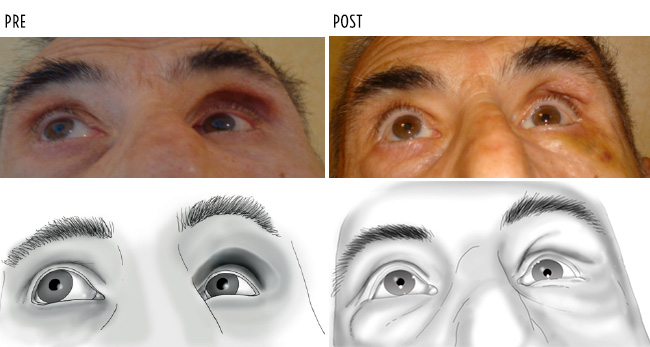

|
La traumatologia orbitaria rappresenta un importante settore ultraspecialistico nel quale sono richieste specifiche capacità diagnostiche e chirurgiche che, spesso, devono necessariamente integrarsi in una gestione multidisciplinare. L’obiettivo dell’intervento clinico-riabilitativo a seguito di un trauma oculare e della faccia ha come finalità la conservazione della funzione del bulbo oculare, il miglior recupero funzionale ed estetico e spesso soprattutto nei bambini i risvolti legati allo sviluppo psicofisico.
A queste patologie è, molto spesso collegato un contenzioso medico legale che rende fondamentale il rispetto di protocolli e linee guida di trattamento.Molto spesso si tratta di quadri clinici estremamente complessi che necessitano di dati clinici e informazioni ottenute con le più moderne tecniche di imaging (TAC/RM). La Tomografia Assiale Computrizzata, eseguita di routine nei traumi cranici, permette di diagnosticare la maggior parte delle fratture ossee a carico dell’orbita.
Studio del bulbo oculare
L’esame dell’occhio si basa sulla considerazione che i traumi oculari contusivi o perforanti possono dare patologie del segmento anteriore dell’occhio (cornea o cristallino) e dalla parte posteriore dell’occhio (vitreo, retina, nervo ottico).
Sintomi del trauma oculare
- Fratture del tetto dell’orbita (non frequenti) spesso presenti coinvolgimento del seno frontale (epistassi, rinoliquorrea, enfisema sottocutaneo), del nervo sopraorbitario con anestesia locoregionale, ma soprattutto del nervo ottico per propagazione dell’energia del trauma verso l’apice orbitario (esame del riflesso fotomotore e del fondo oculare). In qualche caso, estremamente drammatico, è presente erniazione del tessuto cerebrale (esoftalmo pulsante) con gravi conseguenze neurologiche precoci e tardive e frequentissime lesioni ai muscoli del comparto elevatore dell’occhio (retto superiore ed elevatore della palpebra).
- Fratture della parete mediale dell’orbita, di solito combinate con quelle del naso (epistassi e liquorrea) e della fronte. Spesso, sono mascherate da edemi ed ematomi che interessano la faccia in toto. L’appiattimento delle ossa nasali (dish-face), possibile allargamento dell’orbita, dislocamento del bulbo, enfisema sottopalpebrale, limitazione dei movimenti oculari ed alterazione dei margini palpebrali (telecanto) e delle vie lacrimali con lacrimazione e pus.
- Fratture della parete laterale, limitate al solo pilastro esterno sono piuttosto rare, ma facilmente diagnosticabili anche con la sola palpazione, e spesso sono asintomatiche.
- Fratture laterali infero-esterne sono frequentemente fratture complesse, diagnosticabili anche in presenza di grossolani ematomi per: la dislocazione della regione malare, l’appiattimento dello zigomo nelle frattture tripartite, l’anomala posizione della palpebra inferiore e del canto esterno.
- Fratture isolate del pavimento dell’orbita e del bordo orbitario inferiore, spesso misconosciute, possono presentare enoftalmo, in qualche caso tardivo, visione doppia verticale, pressochè immediata, ipoestesia dell’emifaccia corrispondente per lesione del nervo infraorbitario.
- Frattura dell’apice dell’orbita si manifesta con dilatazione pupillare (midriasi post-traumatica), marcata diminuzione della vista e danni al fondo oculare.
Terapia per il trauma oculare
La programmazione della terapia chirurgica, quando necessaria, compete a diverse specialità talvolta in collaborazione multidisciplinare, data la complessità della traumatologia in questa zona che presenta spesso fratture estese, soprattutto quelle frontobasilari, le fratture di Le Fort e quelle dell’intero massiccio facciale.
Esiti della terapia
- Rottura del sinergismo dei movimenti oculari (strabismo secondario) è una delle complicazioni più frequenti dei traumi orbitari e soprattutto nell’infanzia possono arrivare a produrre importanti alterazioni dello sviluppo visivo.
- Una delle complicanze a distanza, soprattutto nelle fratture inferiori dell’orbita è l’enoftalmo che può essere trattato sia con metodiche tradizionali con innovative tecniche di medicina rigenerativa come il lipofilling.
- Un aspetto importante, riferibile agli esiti è legato anche all’aumento dell’incidenza che rappresenta nelle diverse casistiche fino al 30% delle patologie oculari trattate soprattutto nei bambini. Di fatto molti dei traumi trattati sia a livello scolastico che nel mondo del lavoro sono evitabili aumentando il livello di sorveglianza e di prevenzione. Si tratta sicuramente di migliorare la legislazione specifica e coordinare le regole nell’ambito del codice della strada e considerare queste problematiche come parte delle politiche sociali.
In sintesi la vera terapia dei traumi oculari non è quella medica o chirurgica ma quella educativa e preventiva.
Il Dott. Garzione è disponibile per valutare la terapia più adeguata in caso di presenza di trauma oculare. È possibile richiedere un appuntamento presso una delle nostre sedi ai seguenti contatti:
Sede di Roma
+39 06 3728555 – +39 06 374145
Sede di Salerno
+39 0974.62397
|
|

{kind=link}